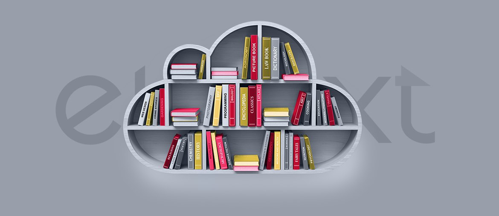

1
Map the journey
Trace candidate, learner, coach, and employer states across the Palantir path and current Makers application tools.
Makers is moving from training talent to scaling higher-stakes data pathways with enterprise partners. That needs steady platform work behind the scenes.
Why we're here: we saw the Level 5 Data Engineering Apprenticeship with Palantir. That looks like a moment where senior data and platform support could help the programme scale.
The Palantir path tells us Makers is raising the bar for data training. The hard part is not only curriculum. It is the technical setup around data tasks, learner progress, assessment flow, and partner reporting. If that work sits only with the internal team, commercial delivery can slow. Candidates also need clear status and feedback, so trust stays high.
A dedicated squad would work under your product owner for a six-week pilot. The goal is a stronger data apprenticeship delivery layer.
Trace candidate, learner, coach, and employer states across the Palantir path and current Makers application tools.
Design safe Python and pipeline exercises with repeatable environments, clear scoring, and mentor review points.
Create a simple status model for applications, assessments, onboarding blockers, partner handoff, and team alerts.
Add QA, performance checks, and release notes so the Makers team can keep control after handover.
Elinext is a full-cycle software development company, active since 1997, with about 700 in-house specialists and no freelancers. We build web, data, AI, DevOps, and QA teams for clients in Europe, North America, Asia, and beyond. For Makers, ISO 27001 and ISO 9001 matter because apprenticeship data and partner trust need care. Our named customers include Siemens, Broadcom, Volkswagen, and TUI. This same model fits the pilot above: senior people join your team, ship visible work, and leave clean handover.

Elinext built an education platform with FastAPI, Python, Angular, PostgreSQL, TypeScript, Docker, analytics, and learner management.
Read the case studyElinext delivered course authoring, video uploads, quizzes, testing, and certification for a cloud learning product.
Read the case study